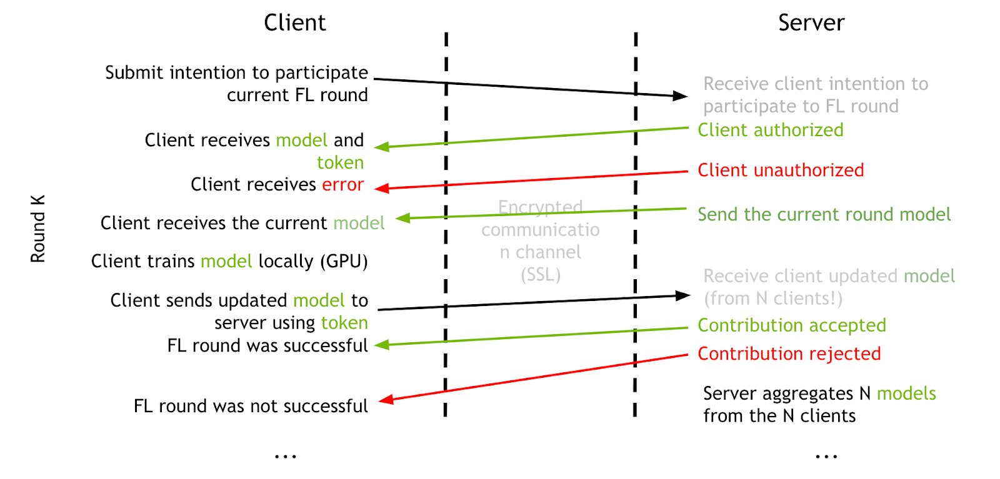

Federated learning background and architecture¶
Federated learning motivation¶
Deep learning, the fastest growing field in AI, is empowering immense progress in scientific and real-life applications. It has been widely accepted that the more data used in the deep learning training, the better models can be achieved. However, those deep-learning algorithms are meeting difficult challenges when applied to the real-world, especially in the financial and health care areas. The data in these areas are typically subject to strong privacy regulations. It is often impossible to share data across different organizations. Annotated data is also hard to obtain and it represents an asset for individual institutions.
Hence, the question becomes: how can you obtain models as good as those that can be obtained training on large datasets without violating privacy and property constraints? One approach to solve this issue is to use federated learning. Different institutions contribute to the construction of a powerful model by doing collaborative training without sharing any data. A generic pre-trained model is fine-tuned for a specific application or a specific patient population. Different institutions share the trained model, not the actual data! With this approach, you can achieve the goal of training better models, while still protecting the data privacy.
How does federated learning work¶

Federated learning is split into two parts: the server and the client. The server manages the overall model training progress and broadcasts the original model to all the participating clients. Model training happens locally on each client’s side. This way, the server does not need to access the training data. The data is protected with the private access on each client. All the clients are sharing the model updates instead of the data. Each client has its own privacy controls on what percentage of the model weights will be sent to the server for aggregation.
Once the server receives the latest round of models from the clients, the server can build its own algorithm on how to aggregate the model. It could be a simple average from all the clients, or based on some weights from the historical contributions from the clients.
The server has the overall control of how many rounds of federal learning training to conduct. The participating clients can be added or removed during any round of the training. Federated learning provides benefits for every participant: a stronger central model, and better local models.
Federated learning system architecture¶
When running a federated learning model training, a server training service must first be started. The server session controls the minimum number of clients needed to start a round of FL training and the maximum number of clients that can join a round. If a client intends to join a FL session, it must first submit a login request to apply for FL training. The server will check the credentials of the FL client and perform the authentication process to validate the client. If the authentication is successful, the server sends a FL token back to the client for use in the following FL client-server communication. Otherwise, it sends an authentication rejection if the client can not be authenticated.
Then the client sends another request to get the current training model from the server to start the current round of model training. The client has its own control on how many epochs it will run during each round of FL training. Once the client finishes the current round of training, it sends the updated model to the server using the existing FL token. After the server receives all the updated models from all the participating clients, it performs the model aggregation based on the weights algorithms and gets the updated overall training model. This completes the current round of the FL training, and the FL training continues until it reaches the max rounds set on the server, num_rounds in the server configuration file.